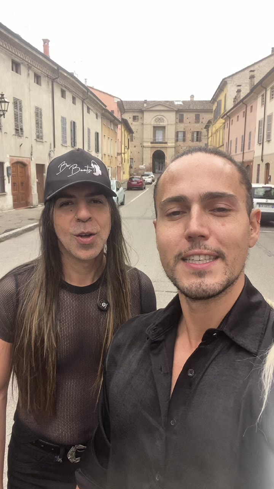
Muito prazer
A dupla se apresenta · na voz deles
+800 shows · 6 países
São Paulo · Brasil & exterior
Be Boots em números
Palcos e parceiros
A experiência
Música, voz, interação e presença. Tudo ao vivo, tudo Be Boots.
Um DJ que conduz a pista com precisão e personalidade; e, uma voz que transforma a festa em um verdadeiro acontecimento. O set não toca sozinho: ele acontece com a gente no meio da sua pista.
Da música disco ao funk, do pop rock ao samba: caminhamos por todos os estilos para a sua festa ser única. A curadoria nasce do seu evento, não de um roteiro pronto.
Já foram mais de 30.000 pessoas cantando juntas num único evento. Mas seja um festival ou um jantar de 50 convidados, a régua é a mesma: na nossa pista, quem brilha é você.
Tudo feito para quem vive experiências e não apenas momentos.
Editorial
Cada apresentação ganha uma identidade visual única, alinhada à atmosfera do evento. Muitas vezes, é a própria anfitriã quem escolhe o figurino da Be Boots para compor o cenário que ela construiu.
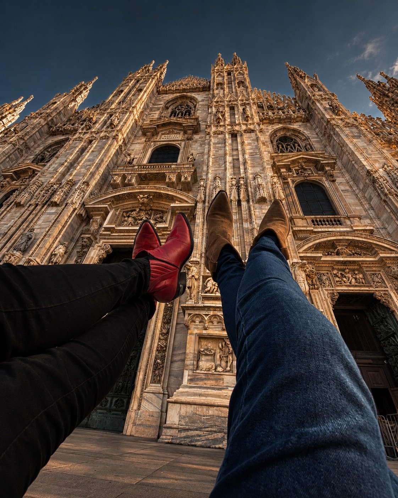
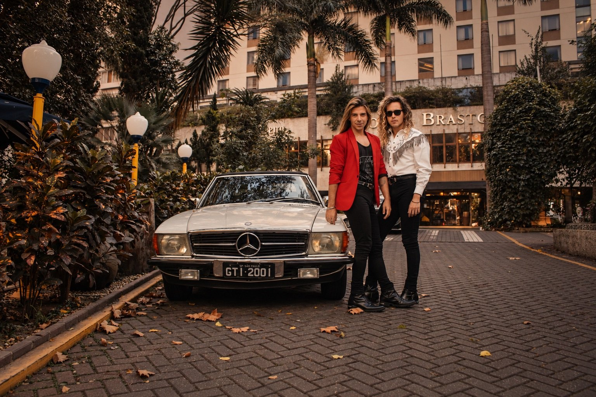
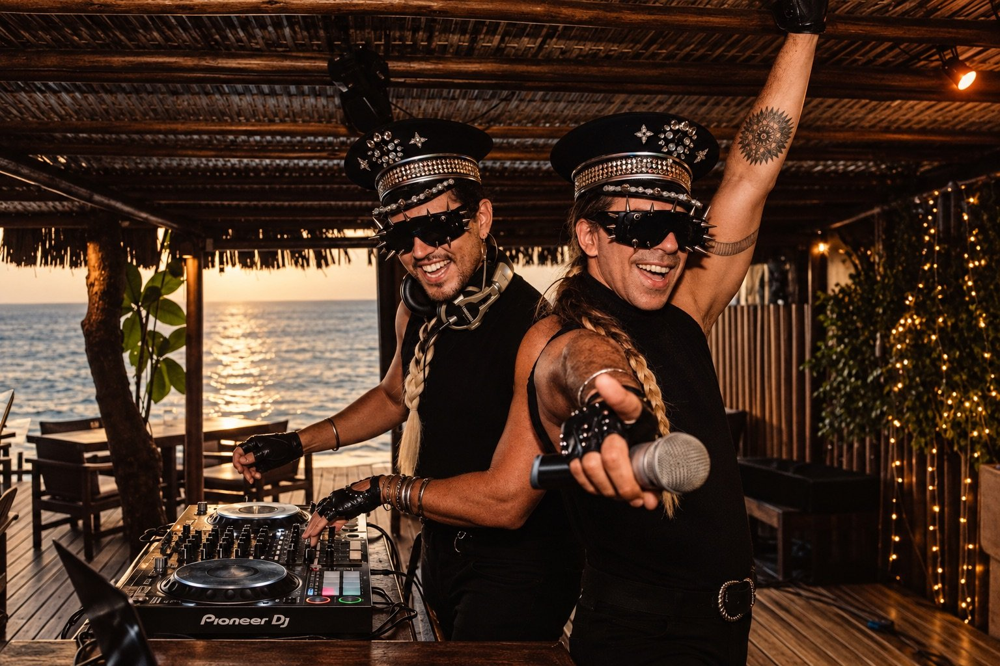
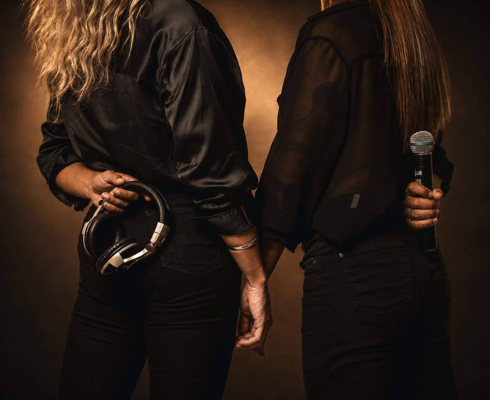
“Não é sobre vaidade. É sobre propósito, no show e na vida.”
Be BootsAs figuras
Quem contrata a Be Boots não leva só um show: leva os dois artistas que os convidados vão querer conhecer no fim da noite.
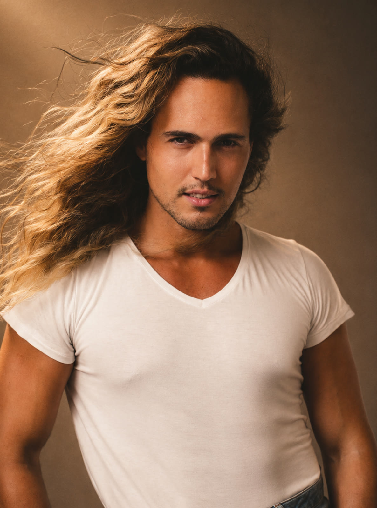
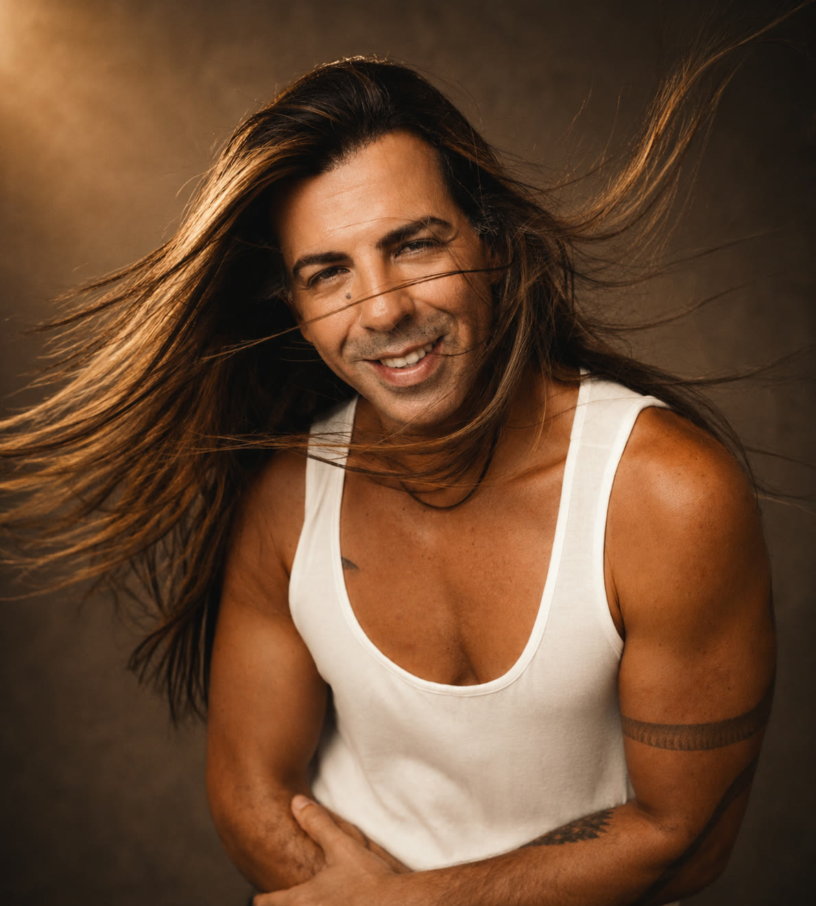
Cinco anos de estrada construídos com constância, autenticidade e verdade. Uma dupla que canta, mixa, se veste para o seu tema e conduz a festa de dentro da pista; e, não atrás de uma mesa.
É por isso que quem contrata Be Boots termina o evento com dois amigos novos! Não é apenas a dupla de DJs. É o Vini e o Zeca.

A dupla se apresenta · na voz deles
Sets exclusivos para experiências premium
Do "sim" de um casal ao brinde dos 50 anos, do lançamento de marca ao palco de festival: o show se desenha sob medida para o seu evento.
"Ser a escolha de tantos casais tem sido um dos pontos mais emocionantes da nossa carreira." Curadoria musical com os noivos, leitura fina da pista e a energia certa em cada fase da festa, até o último convidado.
Os 40, 50, 60, 70 são os novos 15. "Na nossa pista, ela é a dona absoluta da noite": debutantes e aniversariantes vivem a festa como protagonistas, não como espectadoras.
Moda, música e Be Boots num só lugar: convenções, premiações e eventos de marca, como o Banco do Brasil, o Fidenza Village, na Itália, e o Mama Shelter, em Portugal, com repertório e figurino sob o tema da ocasião.
Da abertura do Carnaval de Porto Seguro ao Rainbow Fest e aos festivais da Itália: já foram mais de 30.000 pessoas reunidas em um único evento. Quando o palco cresce, o show cresce junto.
Assista com som
Nada aqui é ensaio nem banco de imagem: é o que os seus convidados vão viver. Toque num vídeo e ouça com som.
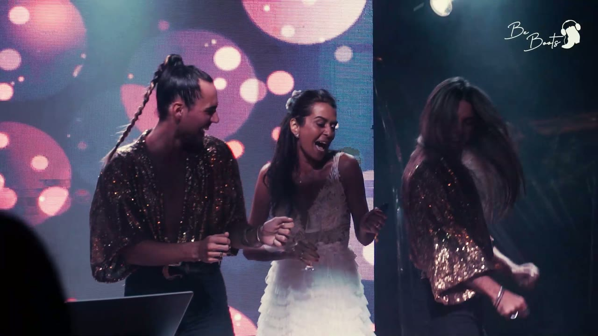
A noiva no centro da festa · ouro
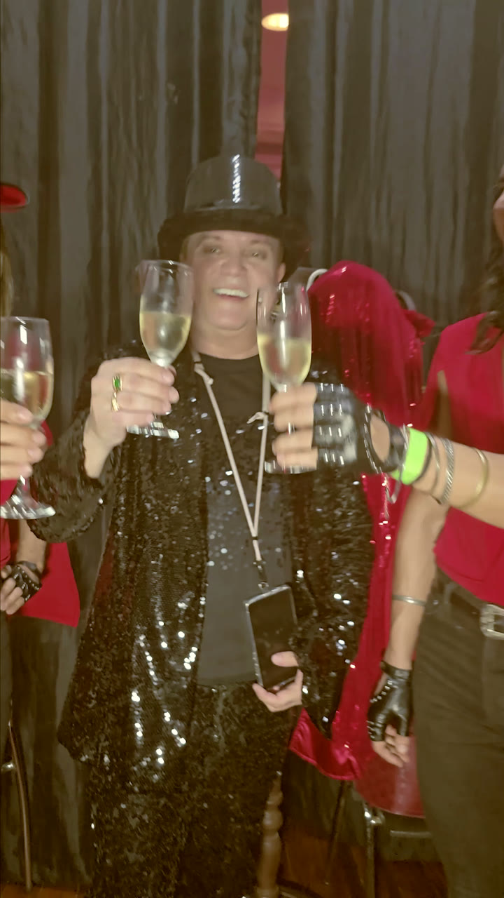
Uma noite de gala · do tapete ao palco
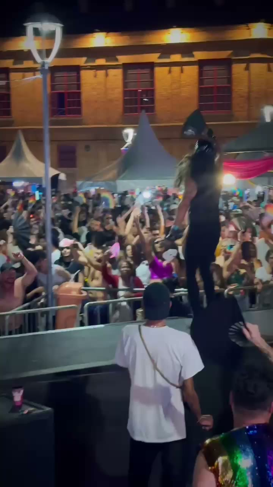
O 700º show · Juiz de Fora
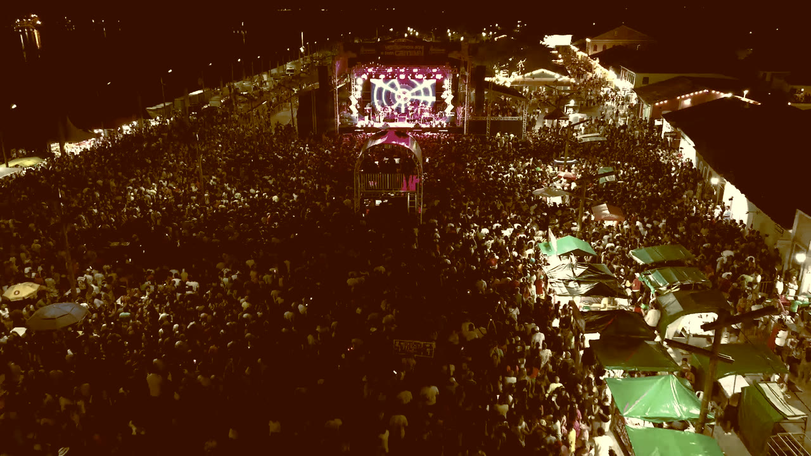
Abertura do Carnaval
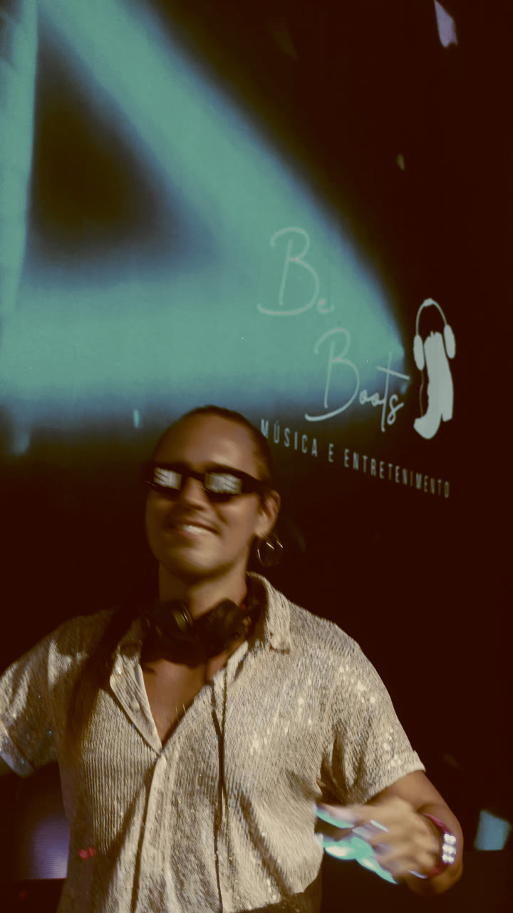
Evento de marca · convenções e prêmios
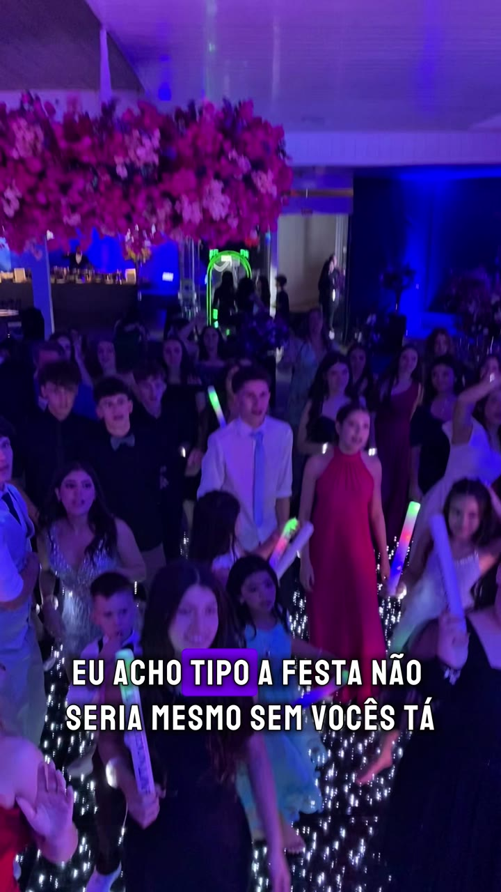
Na voz da debutante · depoimento real
Arraste ou use as setas
Do Brasil para o mundo
De São Paulo aos festivais da Itália, de Ibiza a Portugal: mais de 170 shows internacionais, e contando.
A temporada europeia já passou por palcos e casas como Fidenza Village, Il Colle e casamentos na Itália, com o mesmo cuidado de sempre: estilo, energia e experiências inesquecíveis em qualquer idioma.
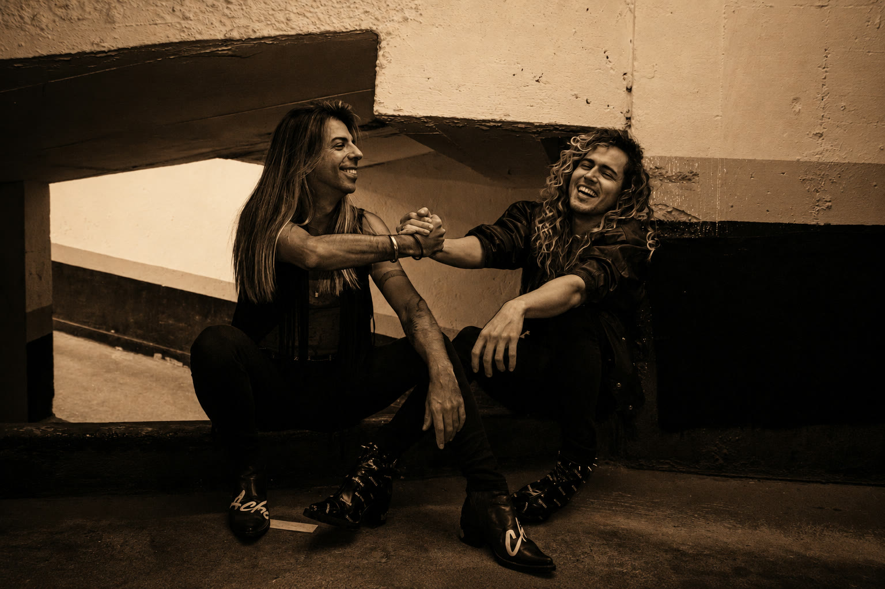
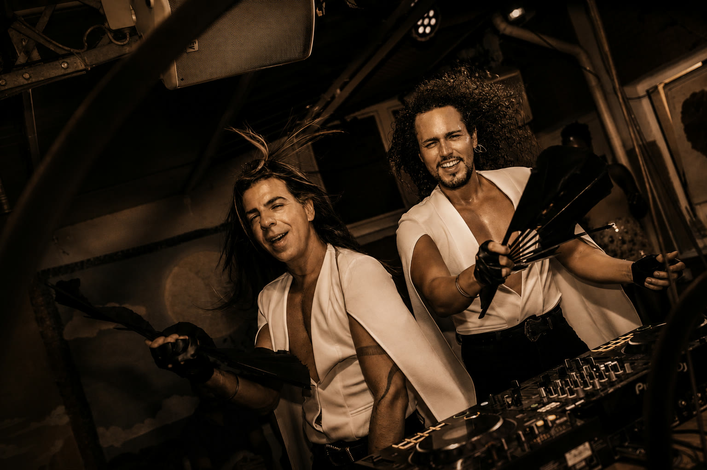
Feedbacks
No nosso casamento, souberam sentir o clima da festa, escolher as músicas certas e não deixou ninguém parado na pista. Foi simplesmente perfeito e tornou nossa noite ainda mais especial. Com certeza recomendamos de olhos fechados!
Simplesmente incrível. Não é só música, é experiência. Quando eles tocam, parece que tudo ao redor muda, a energia, o clima, as pessoas... é difícil até descrever. Você sente.
Nosso muito obrigada à Beboots por tornar nossas Bodas ainda mais especiais! Foi um sucesso, e a alegria dos nossos convidados teve um toque especial graças a vocês. Gratidão pela parceria e pelo excelente trabalho!
I Be Boots sono sempre una garanzia! Musica bellissima, loro magnetici e un intrattenimento davvero coinvolgente. Portano un'atmosfera latina pazzesca e rendono ogni serata indimenticabile!Todo mundo amou o show, e eu também! Vocês foram um dos pontos principais da festa. As músicas, muito boas... eu amei muito, fiquei apaixonada.
Perguntas frequentes
Um show completo: mixagem, voz ao vivo, interação e performance, com dois artistas no comando da pista do começo ao fim. Não é um DJ atrás da mesa; é a festa acontecendo no meio dos seus convidados.
Sim. Da música disco ao funk, do pop rock ao samba, caminhamos por todos os estilos. A curadoria é desenhada com você, a partir do tema e do público do seu evento.
Cada evento recebe um figurino autoral, pensado para a estética da festa. Se você tem um tema, a dupla se veste para fazer parte do cenário que você construiu.
Sim. Já são mais de 20 cidades e 6 países, com mais de 170 shows internacionais. Deslocamento e logística entram detalhados na proposta, sem surpresas.
Cada show é desenhado sob medida: formato, figurino, logística e praça mudam o valor. Depois da reunião, a proposta sai personalizada para o seu evento: cada tema é respeitado com exclusividade e cuidado, do repertório ao figurino.
Chama a gente no WhatsApp com a data, a cidade e o tipo de evento. A gente confirma a disponibilidade e agenda uma reunião para desenhar o show do seu evento.
Consultar disponibilidade
Conta pra gente a data, a cidade e o tipo de evento. A gente responde com a disponibilidade e agenda a sua reunião.
São Paulo · Brasil & exterior · Bem-vindo ao mundo Be Boots